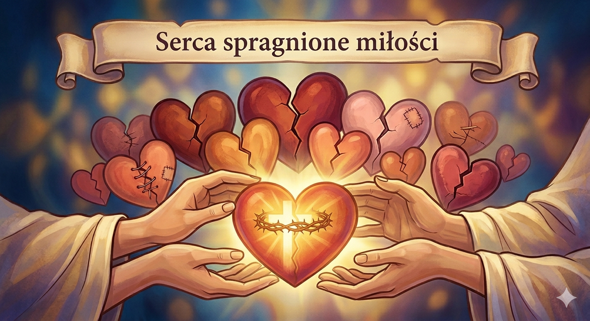

11 Maja 2026

Każdy człowiek nosi w sobie potrzebę bycia kochanym. Na szczęście Bóg każdemu człowiekowi dał serce: niektórym większe, niektórym mniejsze, o różnych kształtach i kolorach. Lecz to jeszcze nie wystarczy, bo to my pragniemy miłości drugiego człowieka i pragniemy ich serca.
Dlatego serce każdego człowieka ma jedno duże pęknięcie i jest od urodzenia połamane na pół. Możemy się starać sklejać, zszywać i łatać nasze serca, ale to pęknięcie się zawsze będzie pojawiać. Bo wcześniej czy później nasze serce znowu zacznie bić i będzie bić dla drugiego człowieka. Można być nadgorliwym i chcieć oddawać drugiemu całe swoje serce, lecz wtedy zostaniesz tylko z wielką pustką w klatce piersiowej.
Jedynie powinniśmy dawać drugiemu człowiekowi jedną połowę naszego serca, tą większą. Czy ta osoba przyjmie ten prezent, to już nie od nas zależy. Najwyżej wróci do nas z powrotem. Choć może przyjmie nasz dar i też dobrowolnie podzieli się z nami tym, co ma najcenniejszego.
Wtedy już w nas będą bić dwa różne serca, nie jedno. Choć kto wie, może i jedno tylko serce. Serca, nie nasze ani też drugiego człowieka, lecz serce Jezusa, który nam swoje serce i swoje życie jako pierwszy dał.